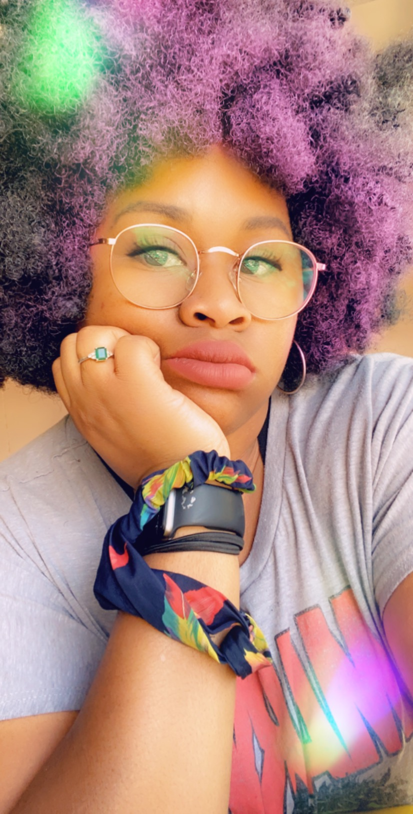

Who am I?
Honestly, I'm quite an open book. I didn't always used to be that way, however, as I've gotten older I have decided to be a lot more open and forthcoming. It's really a great place to be!
Education
I graduated from The University of Arizona(Go Wildcats!!) in 2018 with my Bachelors Degree.
- Major: Economics
- Minor: Hip/Hop (Yes you read that right!)
I also attended Pima Community College where I earned my Associates Degree.
- Major: Business Administration
Work Experience
My work experince has primarily been service industry. Customer service and a couple years as a manager at an autoshop has made me well-rounded when it comes to areas like leadership and communication.
Goals
Ideally would like to work for a company that champions a work/life balance. One that encourages my creative side and perhaps can incorporate my two biggest hobbies; electronics and video games.